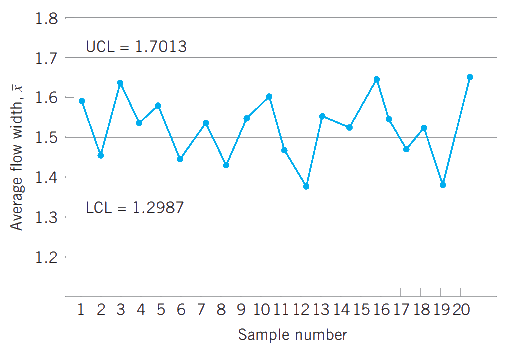

Inferencia sobre procesos de calidad y diagramas de control
IEST 422 - 2022/02
Eloy Alvarado Narváez
Universidad de Valparaíso
15/09/22
Introducción
El concepto de muestra aleatoria ha sido utilizado en todos los cursos anteriores, incluyendo la característica de que provienen de la misma población, siendo cada muestra independiente e idénticamente distribuidas.
Esta definición es apropiada para población infinitas o para poblaciones finitas donde el muestreo es realizado con reemplazo.
Bajo muestreos sin reemplazo desde una población finita de \(N\) elementos, decimos que una muestra de \(n\) elementos es una muestra aleatoria si cada una de las \(\binom{N}{n}\) posibles muestras tiene un misma probabilidad de ser escogida.
En el contexto de control de calidad, usualmente asumiremos que nuestros datos provienen desde una muestra aleatoria, sin embargo, existen otras estrategias de muestreo que podrían ser útiles. Debemos tener especial cuidado en los supuestos planteados en las metodologías de inferencia.
Muestreo desde una distribución normal
Supongamos que \(x\) es una variable aleatoria normalmente distribuida con media \(\mu\) y varianza \(\sigma^2\). Si \(x_1,x_2,\dots,x_n\) es una muestra aleatoria de tamaño \(n\) desde este proceso, entonces la distribución de su media muestral \(\overline{x}\) es \(N(\mu,\sigma^2/n)\).
¿Por qué pasa esto?
Esta propiedad de la media muestral no está restringida exclusivamente para el caso de muestras desde una distribución normal.
Distribución Chi cuadrado
Una distribución muestral importante definida en términos de la distrivución normal es la distribución \(\chi^2\). Si \(x_1,x_2,\dots,x_n\) son variables aleatoria normales i.i.d. con media cero y varianza unitaria, entonces la variable aleatoria:
\[y=x_{1}^{2}+x_{2}^{2}+\dots+x_{n}^{2}\]
se distribuye chi cuadrado con \(n\) grados de libertad. La distribución de probabilidad chi cuadrado con \(n\) grados de libertad es:
\[f(y)=\dfrac{1}{2^n\Gamma(\dfrac{n}{2})}y^{(n/2)-1}\exp(-y/2)\]
La distribución es sesgada con media \(\mu=n\) y varianza \(\sigma^2=2n\)
Muestreo desde una distribución binomial
Supongamos que una muestra aleatoria \(x_1,x_2.\dots,x_n\) es tomada desde un proceso Bernoulli con probabilidad constante de éxito \(p\). Entonces la suma de las observaciones muestrales
\[x=x_1+x_2+\dots+x_n\]
tiene una distribución binomial con parámetros \(n\) y \(p\). Además, debido a que cada \(x_i\) es 0 o 1, la media muestral:
\[\overline{x}=\dfrac{1}{n}\sum_{i=1}^{n}x_i\]
es una variable aleatoria discreta que puede tomar valores en
\[\{0,1/n,2/n,\dots,(n-1)/n,1\}.\]
Muestreo desde una distribución binomial: continuación
La distribución de \(\overline{x}\) puede ser obtenida desde el caso binomial como:
\[\mathbb{P}(\overline{x}\leq a)=\mathbb{P}(x\leq an)=\sum_{k=0}^{[an]}\binom{n}{k}p^k(1-p)^{n-k}\]
donde \([an]\) es el mayor entero menor o igual a \(an\). La media y varianza de \(x\) son
\[\mu_x=p \quad \quad \sigma_{x}^{2}=\dfrac{p(1-p)}{n},\]
respectivamente.
Muestreo desde una distribución Poisson
Consideremos una muestra aleatoria \(x_1,x_2,\dots,x_n\) de tamaño \(n\) desde una distribución Poisson con parámetro \(\lambda\). La distribución de la suma muestral
\[x=x_1+x_2+\dots+x_n\]
es también Poisson con parámetro \(n\lambda\). Más generalmente, la suma de \(n\) variables aleatorias independientes Poisson se distribuye Poisson con parámetro igual a la suma de los parámetros individuales. Consideremos la distribución de la media muestral
\[\overline{x}=\dfrac{1}{n}\sum_{i=1}^{n}x_i\]
Muestreo desde una distribución Poisson: continuación
Su distribución de probabilidad es:
\[\mathbb{P}(x\leq a)=\mathbb{P}(x\leq an)=\sum_{k=0}^{[an]}\dfrac{\exp(-n\lambda)(n\lambda)^k}{k!}\]
Donde su media y varianza son:
\[\mu_x=\lambda \quad \quad \sigma_{x}^{2}=\dfrac{\lambda}{n},\]
respectivamente.
Estimación puntual
Una variable aleatoria está caracterizada o descrita por su distribución de probabilidad. La distribución es descrita por sus parámetros.
Un número importante de propiedades son requeridas para obtener un estimador puntual. De estas, destacan dos:
El estimador puntual debe ser insesgado
El estimador puntual debe tener varianza mínima.
Estimadores puntales
La media y varianza muestral \(\overline{x}\) y \(s^2\) son estimadores insesgados de la media y varianza poblacional \(\mu\) y \(\sigma^2\), respectivamente.
La desviación estándar muestral \(s\) no es un estimador insesgado de la desviación estándar poblacional, de hecho se tiene que para el caso normal:
\[\mathbb{E}(s)=\left(\dfrac{2}{n-1}\right)^{1/2}\dfrac{\Gamma(n/2)}{\Gamma((n-1)/2)}\sigma\]
Tarea N°1: Demostrar el enunciado anterior
Estimadores puntuales: continuación
En muchas aplicaciones estadísticas dentro del contexto de control de calidad, es conveniente estimar la desviación estándar por el método del rango.
Sea \(x_1,x_2,\dots,x_n\) una muestra aleatoria de \(n\) observaciones desde una distribución normal con medial \(\mu\) y varianza \(\sigma^2\). El rango de la muestra es:
\[R=\max(x_i)-\min(x_i)=x_{máx}-x_{mín}\]
La variable aleatoria \(W=R/\sigma\) es llamado el rango relativo, y un estimador insesgado para la desviación estándar \(\sigma\) de una distribución normal es:
\[\hat{\sigma}=\dfrac{R}{d_2}\]
donde \(d_2\) es una constante que depende del tamaño de la muestra.
Tarea N°1
- Sea \(x_1,x_2,\dots,x_n\) una muestra aleatoria i.i.d. desde una distribución normal. Mostrar que:
\[\mathbb{E}(s)=\left(\dfrac{2}{n-1}\right)^{1/2}\dfrac{\Gamma(n/2)}{\Gamma((n-1)/2)}\sigma\]
- Introduction to statistical quality control, Montgomery: Ejercicios 3.33, 3.40, 3.52, 3.53, 3.59, 4.8, 4.15, 4.25, 4.27, 4.30.
Entrega: 6/10
Métodos estadísticos en el control de calidad
Si se desea que un producto cumpla o exceda las expectativas del cliente, generalmente debería ser producido por un proceso que es estable y repetible. Más precisamente, el proceso debe ser capaz de operar con poca variabilidad entorno a un objetivo o dimensión nominal de alguna de las características importantes de la calidad.
El control estadístico de procesos (SPC, por sus siglas en inglés) es una colección de herramientas útiles para lograr que un proceso sea estable y aumente su capacidad mediante la reducción de la variabilidad.
Herramientas del control estadístico de procesos
Entre las herramientas más destacables se encuentran:
Histograma y diagrama de tallo y hoja
Hoja de control
Diagrama de Pareto
Diagrama causa-efecto
Diagrama de concentración de defectos
Diagrama de dispersión
Diagrama de control
Si bien estas son las principales herramientas del control estadístico de procesos, estas solo refieren al aspecto técnico. Para la correcta implementación de un sistema de control de calidad, más dimensiones deben ser consideradas.
Razones para la variación en un proceso
En cualquier proceso productivo, independiente de que tan bueno sea el diseño, siempre existirá una variabilidad inherente. Esta variabilidad natural o ruido de fondo es el efecto acumulado de muchas pequeñas causas inevitables.
En el contexto de control estadístico de procesos, esta variabilidad natural se le llama sistema estable de causas aleatorias.
Un proceso se dice que está bajo control estadístico si la variablidad es solo debido a causas aleatorias
Otro tipo de variabilidad pueden ocasionalmente estar presentes en la salida de un proceso. Esta variablidad en las características importantes para la calidad usualmente provienen de 3 fuentes:
Máquinas mal ajustadas o controladas
Errores del operador
Materiales defectuosos
Razones para la variación en un proceso: continuación
Este último tipo de variabilidad es usualmente más grande que el ruido de fondo, y por lo general conlleva en un nivel inaceptable de rendimiento. A este tipo de fuentes de variación (que no son las inherentes al proceso) les llamamos causas asignables de variación.
Un proceso que está operando bajo la presencia de causas asignables de variación se dice que está fuera de control.
Generalmente los procesos operarán bajo un estado de control por periodos relativamente largos de tiempo. Sin embargo, ningún proceso es estable para siempre, y eventualemente causas asignables de variación ocurrirán.
Un objetivo principal del control estadístico de procesos es la rápida detección de estas ocurrencias para que una investigación (y posterior corrección) pueda ser llevada a cabo.
Diagramas de control
Un diagrama de control es una técnica de monitoreo de procesos on-line usada ampliamente, estos también pueden ser utilizados para estimar parámetros de un proceso de producción, y a través de esta información, determinar la capacidad del proceso.
El objetivo final del control estadístico de procesos es la eliminación de la variabilidad en el proceso.
Principios básicos
Principios básicos: continuación
Existe una estrecha relación entre los diagramas de control y las pruebas de hipótesis, por ejemplo si el eje vertical en la figura anterior fuera \(\overline{x}\), entonces podremos interpretar nuestros límites de control como los límites de decisión.
Ejemplo
Supongamos que el ancho de flujo (una medida de cuanto se expande un elemento debido a un proceso de horneado) puede ser controlado con una media de \(1.5\) micrónes y se sabe que la desviación estándar del ancho de flujo es \(0.15\) micrónes. Cada hora, una muestra de tamaño 5 es tomada, y se calcula su media muestral.
Debido a que la media es \(1.5\) micrónes y le desviación estándar \(0.15\), se tiene que para \(n=5\) la desviación estándar de la media muestral \(\overline{x}\) es:
\[\sigma_{\overline{x}}=\dfrac{\sigma}{\sqrt{n}}=\dfrac{0.15}{\sqrt{5}}=0.0671\]
Ejemplo: continuación
Por lo que, si el proceso está en control con una media de 1.5 micrónes, sigue que (por teorema del límite central) esperaríamos que el \(100(1-\alpha)\%\) de las medias muestrales \(\overline{x}\) caigan entre \(1.5+Z_{\alpha/2}(0.0671)\) y \(1.5-Z_{\alpha/2}(0.0671)\), aproximando el cuantil a 3 (de manera arbitraria):
\[UCL=1.5+3(0.0671)=1.70013 \quad \quad LCL=1.5-3(0.0671)=1.2987\]
Estos límites son típicamente llamados límites de control tres sigma.
Ejemplo: continuación
Notar que escoger los límites de control es equivalente a determinar la región crítica de un test de hipótesis:
\[H_0: \mu=1.5 \quad \quad H_1= \mu \neq 1.5\]
donde \(\sigma=0.15\) es conocido.
En esencia, el diagrama de control prueba esta hipótesis repetidamente en diferentes tiempos. Así, podemos dar un modelo general para un diagrama de control: Sea \(w\) un estadístico muestral que mide alguna característica de la calidad de interés, y supongamos que la media de \(w\) es \(\mu_w\) y su desviación estandar es \(\sigma_w\). Entonces la línea central, UCL y LCL serán:
\[UCL=\mu_w+L\sigma_w \quad \quad CL= \mu_w \quad \quad LCL=\mu_w-L\sigma_w\]
donde \(L\) es la distancia de los límites de control a la línea central, expresado en unidades de la desviación estándar.
Usos del diagrama de control
El diagrama de control es un dispositivo para describir de manera precisa exactamente lo que se entiende por control estadístico, por lo que puede ser ocupado de varias maneras. En muchas aplicaciones, es usado en el monitoreo de procesos on-line o de vigilancia.
El uso más importante de los diagramas de control es mejorar el proceso. Hemos visto que, generalmente:
La mayoría de los procesos no operan en un estado de control estadístico
Consecuentemente, el uso rutinario y atento de los diagramas de control asistirán en identificar causas asignables. Si estas causas pueden ser eliminadas del proceso, la variabilidad se verá reducida y el proceso mejorará.
El diagrama de control sólo detectará causas asignables. La acción de administradores, operadores e ingenieros será usualmente necesario para eliminar estas causas asignables.
Usos del diagrama de control: continuación
Acción correctiva
Debido a que el control estadístico de procesos sólo detecta las causas, es importante que los especialistas puedan encontrar la raíz del problema, por lo que desarrollar un sistema efectivo de acción correctiva es primordial para la correcta implementación del control de calidad.
Una parte importante del proceso de acción correctiva asociado al uso de diagramas de control es el out-of-control-action plan (OCAP). Un OCAP es un diagrama de flujo o descripción escrita de la secuencia de actividades que deben ser llevadas a cabo tras las ocurrencia de un evento de activacción (que usualmente son las señales de fuera de control de un diagrama de control).
Los OCAP consisten en checkpoints, que son potenciales causas asignables. y terminators, que son acciones a tomar para resolver la condición de fuera de control.
Los OCAP son un documento vivo en el sentido que serán modificados a lo largo del tiempo conforme más información del proceso se obtiene.
Diagrama de control: estimación
También podemos usar el diagrama de control como un dispositivo de estimación. Esto es, desde un diagrama de control que exhibe control estadístico, podemos estimar cierto parámetros del proceso (como la media, desviación estándar, etc). Luego, estas estimaciones pueden ser utilizados para determinar la capacidad del proceso para producir productos aceptables. Estos estudios proceso-capacidad tienen gran importancia en problemas de administración y gestión que puedan ocurrir a lo largo de un ciclo productivo.
¿Ejemplos?
Tipos de diagrama de control
Los diagramas de control pueden ser clasificados en dos clases generales:
Diagrama de control de variables
Diagrama de control de atributos
Otra importante consideración en el uso de diagramas de control es el tipo de varibilidad
Tipo de variabilidad
Razones para el uso de diagramas de control
Es una técnica provada para mejorar la productividad
Son efectivos para la prevención de defectos
Previenen ajustes innecesarios al proceso
Proveen información de diagnóstico
Proveen información de la capacidad del proceso
¿Qué veremos la próxima semana?
- Elección de los límites de control
- Tamaños muestrales y frecuencia de muestreo
- Subgrupos racionales
- Demás técnicas
¿Qué deben preparar para la próxima semana?
- Leer capítulo 5.3.2-5.7 de Introduction to statistical quality control.
IEST 422 - Semana 4